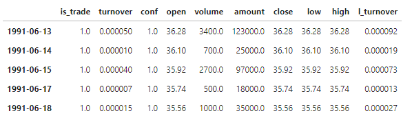
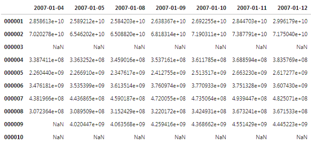

数据主要包括行情数据、因子数据和部分常用数据，都已hdf5的格式进行保存，以pandas.DataFrame的格式进行处理。
HDF5作为数据的基础存储格式，HDF5 拥有一系列的优异特性，使其特别适合进行大量科学数据的存储和操作，如它支持非常多的数据类型，灵活，通用，跨平台，可扩展，高效的 I/O 性能，支持几乎无限量（高达 EB）的单文件存储等。
个股行情数据
个股行情数据主要包括高、开、低、收、成交量、成交金额、是否停牌等信息，价格为后复权价格，数据中包括了复权系数， Index 为交易日。
def fetch_stock_data(code,items='all',is_trade=True,cut = 60)
参数：
- code: 个股代码，str
- items: 行情指标，默认全部读取，str
- is_trade: 是否过滤停牌日行情，默认过滤，bool
- cut: 是否过滤上市前N日行情，默认不取前60日行情，int
示例：
mf.fetch_stock_data('000001').head()
- return

因子数据
因子数据横轴为交易日，纵轴包括了数据起始日至到最后一日的所有历史上市交易个股证券代码，日期格式为%Y-%m-%d,证券代码为六位字符串。其中，个股未上市日期，停牌日期，退市日期的因子值为NaN值。
一般建议保留因子原始数据，再另行保存标准化或者中性化之后的因子数据。
读取：
def read_hdf5_base(name,path='因子数据'):
# 路径可以根据自己本地情况调整
保存：
class hdf5(self):
def save_base_hdf5(self,name,describes,path,source):
'''
示例：
'''保存数据'''
df = mf.hdf5(PB)
df.base_hdf5('PB',describes='PB，ftp数据，停牌日为NaN,剔除前60日',types='因子数据',source='ftp数据')
'''读取数据'''
PB = mf.read_hdf5_base('PB')
PB.head()

基础数据
因子研究中常用的基础数据，包括全部历史股票代码，历史交易日，个股日收益率矩阵，股票停牌和ST信息等等，全局变量可以直接调用
mf.code_list #全部股票代码，list
mf.index_dates #交易日，list
mf.rets_all #个股日收益数据
mf.opens #个股开盘价数据
mf.closes #个股收盘价数据
mf.trade_info #个股停牌信息
mf.ST #ST信息